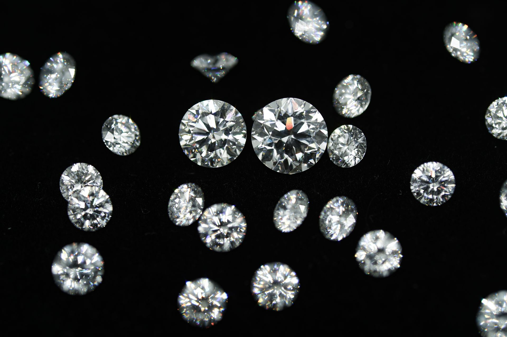

Diamond Clarity Grading for Memorial Diamonds: Inclusion Types
Clarity is not a cosmetic preference. In memorial diamond manufacturing, it is the measurable record of how successfully the HPHT synthesis process converted biological carbon into a defect-minimal crystal lattice. Every inclusion — every pinpoint, cloud, feather, or crystal trapped within the grown diamond — represents a deviation from the ideal cubic structure that the process was designed to produce. Understanding what types of inclusions form in memorial diamonds, why they form, and how they are classified is fundamental for manufacturers who need to predict yield, set quality expectations, and communicate honestly with B2B partners.
This article examines diamond clarity grading from the manufacturing and quality control perspective. We describe the standard clarity grading framework used by major gemological laboratories, the specific inclusion types most commonly encountered in HPHT-synthesized memorial diamonds, and the process factors that influence their formation. We do not offer consumer buying advice. We provide the technical knowledge that manufacturers and partners need to evaluate, classify, and improve memorial diamond clarity outcomes.
Quick Answer
Memorial diamonds typically achieve VVS1 to SI2 clarity, with VS (Very Slightly Included) being the most common grade for well-optimized processes. Flawless clarity is extremely rare due to biological carbon impurities. The most common inclusion types are pinpoints and metallic crystal residues from catalyst solvents. Carbon source purity is the single most important determinant — sulfur from keratin and silicates from plant material form distinct inclusions if not fully removed during purification. Growth rate, temperature stability, and catalyst purity also influence clarity. Clarity cannot be improved after synthesis; optimal cutting orientation can only minimize visibility.
What Clarity Actually Measures
Diamond clarity grading is the systematic evaluation of internal and external characteristics visible under standard magnification. The Gemological Institute of America (GIA) and the International Gemological Institute (IGI) both use the same fundamental framework: a trained grader examines the diamond under 10x magnification and assigns a grade based on the number, size, nature, position, and relief of inclusions and blemishes. The result is a grade on a scale from Flawless (FL) to Included (I3), with most gem-quality diamonds falling in the Very Very Slightly Included (VVS) to Slightly Included (SI) range.
In memorial diamonds, clarity grading serves two distinct purposes. For the end consumer, it provides a standardized quality metric that can be compared against mined diamonds. For the manufacturer, it is a diagnostic tool. The types, locations, and distributions of inclusions in a memorial diamond reveal information about the synthesis conditions — temperature stability, pressure uniformity, catalyst purity, and carbon source quality — that can be used to improve subsequent production cycles. A manufacturer who treats clarity grading as mere quality assurance misses half its value. The other half is process feedback.
Inclusion Types Common in Memorial Diamonds

Memorial diamonds are synthesized from biological carbon, and the specific challenges of this feedstock create a distinctive inclusion profile. While the inclusion types themselves are structurally identical to those found in mined or generic synthetic diamonds, their relative frequencies, distributions, and causes differ in ways that experienced graders and manufacturers learn to recognize.
Pinpoints and Clouds
Pinpoints are minute crystals or crystal fragments — typically less than 5 micrometers in diameter — that appear as tiny dots under magnification. When multiple pinpoints cluster together in a localized region, they form a cloud. In memorial diamonds, pinpoints are often metallic residues from the catalyst solvent (typically a nickel-manganese-cobalt alloy) that did not fully dissolve or segregate during the growth process. Because biological carbon sources contain trace elements that refined graphite does not, the catalyst chemistry in memorial diamond synthesis is more complex, and the risk of metallic micro-inclusions is correspondingly higher.
Clouds are particularly significant because they can reduce transparency even when individual pinpoints are below the detection threshold. A dense cloud scatters light as it passes through the diamond, producing a hazy or milky appearance that lowers the clarity grade by one or more levels even if no single inclusion is prominent. In manufacturing, cloud formation is associated with temperature fluctuations during the growth phase. Stable thermal control in the HPHT cell is the primary mitigation strategy.
Crystals and Mineral Inclusions
Crystal inclusions are larger, distinct mineral particles trapped inside the diamond lattice. In memorial diamonds, these are most commonly metallic sulfides, oxides, or carbides that formed when impurities in the biological carbon reacted with the catalyst or growth environment. The size and color of these crystals influence their visibility and therefore the clarity grade. A dark metallic crystal near the center of the table is far more detrimental to the grade than a light-colored crystal near the girdle.
The nature of the carbon source directly influences crystal inclusion rates. Hair and fur contain keratin with sulfur cross-links; the sulfur content can form metal sulfide inclusions if not adequately removed during the carbon purification stage. Plant-derived carbon sources may contain silicate or mineral residues that survive purification and appear as crystalline inclusions in the final diamond. This is one reason why carbon purification protocols are the most critical determinant of memorial diamond clarity, more so than growth parameters.
Feathers and Fractures
Feathers are small fractures or cleavage cracks inside the diamond. They form when internal stress exceeds the crystal's fracture toughness, typically during the cooling phase of HPHT synthesis when thermal contraction creates localized stress concentrations. In memorial diamonds, feather formation is more common in larger stones because the thermal gradient across a larger crystal is more pronounced. A 1-carat memorial diamond is more likely to contain feather inclusions than a 0.25-carat stone grown under otherwise identical conditions.
From a manufacturing perspective, feathers are the most problematic inclusion type because they represent structural weakness. A feather near the girdle or under a prong can propagate into a full cleavage if the diamond is subjected to mechanical stress during setting or wear. While feathers do not necessarily disqualify a diamond from commercial use, they constrain the cutting and setting options available and must be documented clearly in the grading report.
Needles and Etched Channels
Needles are elongated, thin crystal inclusions that appear as straight or slightly curved lines under magnification. In HPHT-synthesized diamonds, needles are often aligned with the growth direction of the crystal and represent rapid growth conditions where the lattice did not have time to incorporate dopants and impurities uniformly. Needles are more common in high-growth-rate production, which is why manufacturers optimizing for throughput must accept a trade-off with clarity consistency.
Etched channels are surface-reaching features that formed when the diamond was exposed to reactive fluids or gases during the post-synthesis acid cleaning process. In memorial diamonds, the acid cleaning stage is particularly aggressive because biological carbon residues require stronger treatment than pure graphite. If the acid concentration or exposure time is not precisely controlled, the diamond surface can develop microscopic etch pits and channels that are classified as blemishes rather than inclusions but still affect the clarity grade.
The Clarity Grading Scale in Practice
Memorial diamonds rarely achieve the Flawless or Internally Flawless grades. This is not a quality failure; it is a materials reality. The biological carbon source introduces impurities that are impossible to eliminate completely, and the HPHT synthesis process — even when optimized — produces some degree of lattice imperfection. The practical clarity range for memorial diamonds is VVS1 to SI2, with the majority falling in the VS (Very Slightly Included) range.
VVS-grade memorial diamonds contain inclusions that are difficult to locate even for experienced graders under 10x magnification. These are typically minute pinpoints or faint clouds near the girdle. VS-grade diamonds contain inclusions that are visible under 10x but not to the unaided eye. SI-grade diamonds contain inclusions that may be visible to the naked eye under favorable lighting conditions, particularly if the inclusions are dark or centrally located. For B2B partners, the difference between VS and SI grades has significant implications for retail pricing and customer expectations, which is why wholesale pricing structures must account for clarity variation.
The specific grade assigned to a memorial diamond depends not only on the inclusions themselves but on their position and relief. A dark inclusion near the center of the table reduces the grade more than a light inclusion of the same size near the girdle. An inclusion that is visible through the pavilion (bottom) but not through the crown (top) is graded less severely. Grading is a spatial and optical judgment, not merely a checklist.
Manufacturing Process Factors That Influence Clarity
Clarity is not determined by a single variable. It is the emergent property of multiple interacting process parameters, each of which must be controlled within narrow tolerances to achieve consistent results. The following factors are the most significant in memorial diamond manufacturing.
Carbon Source Purity
The carbon purification process — extraction from hair, fur, or plant material, graphitization, and chemical refinement — is the single most important determinant of inclusion content. Residual biological elements that survive purification become the nucleation sites for crystal inclusions. Sulfur from keratin, calcium from bone fragments, and silicates from plant material all form distinct inclusion types that can be identified spectroscopically. Manufacturing protocols that extend purification time or increase chemical treatment intensity reduce inclusion counts but also increase processing cost and carbon loss. The optimal balance is determined empirically for each carbon source type.
Catalyst Composition and Purity
The metal catalyst used to dissolve and transport carbon during HPHT growth is typically a nickel-manganese-cobalt alloy. Catalyst impurities — particularly iron, copper, and titanium — can become incorporated into the growing crystal as metallic inclusions. The purity of the catalyst alloy is therefore a critical quality parameter. Some manufacturers use high-purity catalysts at significantly higher cost to achieve improved clarity consistency. Others accept lower catalyst purity and compensate with more aggressive post-synthesis inspection and sorting.
Temperature and Pressure Stability
HPHT diamond growth requires temperatures of 1,300–1,600°C and pressures of 5–6 GPa. Small fluctuations in either parameter create local deviations from the thermodynamic conditions required for perfect crystal growth. A temperature spike of even 50°C can accelerate growth rate and produce needle inclusions or growth striations. A pressure drop can cause localized dissolution of already-grown crystal, producing voids or feather structures. Modern HPHT equipment uses closed-loop control systems with temperature and pressure sensors embedded in the growth cell, but the extreme environment limits sensor accuracy and response speed. Thermal and pressure optimization remains an active area of process engineering.
Growth Rate and Duration
Faster growth produces more inclusions. This is a near-universal relationship in crystal growth. When the growth rate exceeds the rate at which impurities can be rejected from the growing interface, those impurities become trapped as lattice defects. Memorial diamond manufacturers who need to maximize clarity for a specific order must therefore accept longer growth times, which reduces throughput and increases cost per carat. The trade-off between growth rate, clarity, and production economics is one of the fundamental optimization problems in memorial diamond manufacturing.
Quality Control and Inspection Protocols
Every memorial diamond produced at BioGem Lab undergoes microscopic inspection at multiple stages. The rough diamond is examined before cutting to identify inclusions and determine the optimal cutting orientation. The cut stone is examined under magnification to verify that no new inclusions were introduced during the cutting process. The final stone is photographed and documented for the grading report.
For B2B partners, we provide clarity documentation that includes inclusion mapping, photographs, and explanatory notes. Partners who understand the inclusion profile of their inventory can set accurate customer expectations and avoid disputes. The returns and remakes policy is structured around clarity grade rather than inclusion count, because the grade is the standardized metric that both parties can reference.
Implications for B2B Partners
Memorial diamond clarity is not a binary pass/fail attribute. It is a continuous quality variable that partners must understand, communicate, and price correctly. The following principles guide our partner recommendations.
First, educate the end customer on the relationship between carbon source and clarity. A customer who provides a small hair sample should not expect the same clarity outcome as a customer who provides a larger sample with more carbon mass. Sample quantity and quality influence the purification options available to the manufacturer, which in turn influence inclusion content.
Second, set realistic clarity expectations in advance. We recommend that partners specify a target clarity range (e.g., VS1–VS2) rather than a minimum grade. This provides the manufacturer with flexibility to optimize the production plan while giving the partner a predictable quality band for pricing and customer communication.
Third, use the clarity grade as a process quality indicator rather than an isolated product attribute. A consistent clarity distribution across multiple orders indicates stable manufacturing conditions. A sudden shift in clarity distribution — for example, an increase in SI-grade stones relative to VS-grade — is a signal that the partner should inquire about process changes at the manufacturing facility.
Q: What is the most common clarity grade for memorial diamonds?
A: The majority of memorial diamonds fall in the VS (Very Slightly Included) range — specifically VS1 to VS2. VVS-grade memorial diamonds are achievable with high-purity carbon sources and stable growth conditions but are less common. SI-grade diamonds are also produced, particularly from lower-yield carbon sources or faster growth runs. Flawless (FL) and Internally Flawless (IF) grades are extremely rare in memorial diamonds due to the inherent impurities in biological carbon feedstock.
Q: Can clarity be improved after HPHT synthesis is complete?
A: No. Clarity cannot be fundamentally improved after synthesis because inclusions are trapped within the crystal lattice and cannot be removed without destroying the diamond. However, the visibility of inclusions can be minimized through optimal cutting orientation — placing inclusions near the girdle or in facets where they are less visible. Post-growth treatments such as laser drilling and fracture filling are not used in memorial diamonds at BioGem Lab.
Q: Which manufacturing factor has the greatest impact on clarity?
A: Carbon source purity is the single most important determinant of memorial diamond clarity. Residual biological elements that survive purification — sulfur from keratin, calcium from bone, silicates from plant material — become nucleation sites for crystal inclusions. Extending purification time or increasing chemical treatment intensity reduces inclusion counts but also increases processing cost and carbon loss by 2–4%. The optimal balance is determined empirically for each carbon source type.
Request OEM Consultation
BioGem Lab provides clarity-graded memorial diamonds with full documentation for B2B partners. Get a quote in 24h. 60-day production guaranteed.
Frequently Asked Questions
Can memorial diamonds achieve Flawless clarity?
Flawless clarity is extremely rare in memorial diamonds and should not be expected as a standard outcome. The biological carbon source and the HPHT synthesis process both introduce trace impurities that result in microscopic inclusions. The practical clarity range for memorial diamonds is VVS1 to SI2, with VS grades being the most common for well-optimized processes.
What is the most common inclusion type in memorial diamonds?
Pinpoints and metallic crystal inclusions are the most common types encountered in HPHT-synthesized memorial diamonds. These are typically residues from the catalyst solvent or impurities from the biological carbon source that were not fully eliminated during purification. Clouds formed by clustered pinpoints are also frequently observed.
How does carbon source type affect clarity?
Carbon source type influences clarity through the impurity profile of the raw material. Hair and fur contain sulfur and nitrogen from keratin, which can form metallic sulfide inclusions if not fully removed. Plant-derived carbon may contain silicate and mineral residues. Higher-purity carbon sources and more intensive purification protocols produce diamonds with fewer inclusions and higher clarity grades.
Are inclusions visible to the naked eye in memorial diamonds?
Inclusions in VVS and VS grades are not visible to the naked eye. SI-grade diamonds may contain inclusions that are visible under close inspection with favorable lighting, particularly if the inclusions are dark and centrally located. I-grade diamonds contain inclusions that are visible without magnification. Most memorial diamonds fall in the VS–SI range.
Can clarity be improved after synthesis?
Clarity cannot be fundamentally improved after synthesis. Inclusions are trapped within the crystal lattice and cannot be removed without destroying the diamond. However, the visibility of inclusions can be minimized through optimal cutting orientation, which places inclusions near the girdle or in facets where they are less visible. Post-growth treatments such as laser drilling and fracture filling are not used in memorial diamonds at BioGem Lab.
Explore Manufacturing Capabilities
Learn more about BioGem Lab's HPHT synthesis technology, carbon purification protocols, and quality control systems for memorial diamond production.
Explore ManufacturingRelated Articles
Memorial Diamond Color Science: Nitrogen, Boron, and Lattice Defects
How nitrogen, boron, and lattice defects influence color formation during HPHT synthesis.
EducationalMemorial Diamond Size Guide: Carat Weight by Sample Type
Technical reference for understanding how carbon source type and sample quantity determine achievable carat weight.